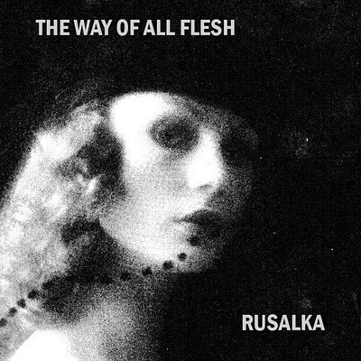
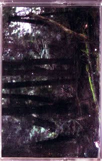

Performances Releases Store
Biography Pictures / Flyers Interviews
Artwork Reviews Contact

Rusalka - Base Waters LP
Released by Absurd Exposition
Kate Rissiek has been a mainstay of the west coast Canadian harsh noise scene for over a decade now and "Base Waters" comes nearly seven years after Rusalka's initial involvement with Absurd Exposition ("Blood Comes Anyway", 2013). Within those years a line can be traced that has continued to tighten around a formidable body of work - from solo releases on stalwart labels such as New Forces, to splits with the likes of MK9 and THE RITA on Neural Operations, and a compilation appearance on heavy electronics powerhouse Tesco Organization. "Base Waters" showcases an artist dedicated to their craft and at the top of their game. However, if anything is evident during Rusalka's past eleven years, it is that "peak performance" negates the fact that there are still more peaks to climb (and make no doubt - they will be climbed). This is a much-deserved LP from one of the most consistent and ever-improving noise acts of our time. Using a theremin as a centerpiece, Rusalka leads us straight into a harsh noise odyssey of oceanic depths - but something is lurking beneath the waves. It's dark. Fog horns sound. A lighthouse is pulsating. Underwater evasion. Capitulation. Receding tides. No respite. These waters run thick. - Absurd Exposition-

Rusalka – Flux A and B
Label: No Rent Records - NRR98
Format: Cassette
Country: USA
Released: February 2019
Review by: Matt Boettke February 2019
Kate Rissiek’s work as Rusalka exhibits an amount of control that should induce nothing but awe, and her patience is unmatched as she explores a sound palette typically not heard in contemporary harsh noise. Utilizing the theremin in ways far from the usual, an unnerving low-end builds an increasingly tense atmosphere that is shattered with washes of high pitches and crumbling textures. While the two pieces still whip you into a debilitating state of hypnosis akin to her previous works, “A Breath In Shadows” presents a bit more movement than the material from recent standout releases, namely “Revisualizations” on New Forces and her splits with MK9 and The Rita on Neural Operations.
Over the course of 20 minutes layer upon layer is peeled back in a way which fully immerses you in the experience; this is not some casual listening bullshit you put on in the background and forget about. It is impossible not to be drawn into the space created between each side of “Flux A and B”, with the aptly titled “Dreams Of Our Possible Worlds” offering an even more unsettling set of piercing drones than it’s companion. Crawling at a slower pace, an intoxicating ringing left in your ears renders you unwilling and unable to break away.
The quality throughout comes at no surprise as Rusalka is definitively one of the best projects currently active in North American harsh noise. There are no regurgitated, tired, or overused themes found here, only a unique take on the depths that many strive for and often fail to achieve.
This tape is an absolute grip, and you will feel like a complete and total fucking asshole if you miss out.

Rusalka – The Way Of All Flesh
Label: Skinwalker – SW 001
Format: CDr, Limited Edition, Numbered
Country: Canada
Released: May 2010
Review by: Joseph Gates 4th April 2012
Rating:5/5
Paranoid Time, Being, and Taskmaster… it seems that many of these great shows come from that tour, and they are all recommended listening. Release-wise, you are going to have a more difficult time finding her work, but the cassette tape on Skeleton Dust (the label run by Being) is quite good and somewhat readily available if you look for it… the cdrs (such as this one) seem to be a little more difficult to acquire.
After a while of looking, I finally managed to snag this one in a trade, and I am really glad that I was able to give it a listen. Cover art is some weird old black and white picture of a lady wearing a veil… kind of reminds me of when Sam/The Rita does his 20s chick/flapper girl kind of stark black and white artwork. The cdr comes in a thin sleeve with very nice print on it, and it says that this item was limited to an edition of one hundred copies. This is a pretty dynamic release, different from the more static wall noise of the cassette tape on Skeleton Dust. The first track, “Flesh,” starts with a low, buzzing rumble with a warm electronic tone to it… this gradually is usurped by some crackling and breaking up static wall texture that moves in with ease and grace. The recording quality is very clean, and you can hear several dynamics working their way out in the process of the recording. Eventually, this all blends together in a large electronic stew, crackling and bellowing wild noise abandon in a controlled environment. Overall, the tone and soud is clean in the same respect as Rusalka live sets… rather than all blending together in one single sound, the elements are all working very clearly in a distinct manner. She favors sharp, piercing (but non-feedback) tones in order to break up the mood sometimes, which are used expertly and present some of the more dramatic moments on the release. By the end of the track, there are vocals that I initially thought was the introduction of some sort of modular synth. Reminiscent in performance/style of when artists like Merzbow or Incapacitants incorporate voice into the sound in a way that works as additional noise rather than traditional vocals. “Dots” closes things out with an existential wall opening with a light crackle… a beautiful sound that would work excellently on cassette as well, but there is a subtle low end that likely could only be detected listening to the compact disc version. Eventually swells to a sound somewhat like a large prehistoric fly in your face, and then gradually interspersed by tiny crackles that arrive like dots in ones vision. The balance of extremities actually gives one a rather disturbed feeling in the brain, and I begin to wonder if I am smelling the sound of my speakers burning, or if the the music is so evocative of a live noise experience that it is simply in my imagination. Track continues in the same vein until around eight minutes into the track, where there is a wash of static that comes in like the tide. As with any release by Rusalka, if you encounter this one it is ensured to be an interested and considered listen. Great work from one of our sisters of the great Northwest.

Rusalka – Perpetual Repetition In The Forbidden Conduit
Label: Skeleton Dust Recordings – SDR026
Format: Cassette, Limited Edition, C20
Country: US
Released: 2010
Review by: Joseph Gates
15th October 2012
Rating:5/5
Excellent Rusalka release from a few years back now on the fantastic Skeleton Dust label. Rusalka is a harsh noise artist from Canada named Kate Rissiek who has become well known in the world of harsh noise music for her blistering and sonically oppressive live performances. This cassette tape gives a nice peek into Rusalka’s impressive range as a noise artist… although closely associated with the Harsh Noise Wall scene due to collaborations and associations with Taskmaster and The Rita, Kate’s harsh noise sound includes a fair amount of full on blistering, screeching harshness that is certainly far removed from the expectations of the Harsh Noise Wall sound. It is sad that people have limited the genre of Harsh Noise Wall with their expectations and rules of what it should be, because ultimately it is a boundless, formless exploration of sound and texture that goes outside the realm of structure completely. The best within the genre exemplify the ecstatic in such a manner that the sound becomes all enveloping, a joyful and destructive collision with expectation. It should not be something that is rote or boring, and the lack of imagination with some artists has led some to judge the genre based only on characteristics uniting the lowest possible common denominators.
Rusalka’s sound, on the other hand, is both “monolithic” (like a large and imposing singular natural rock formation or pillar) and “harsh” (containing sounds that will disrupt concentration and intentionally stimulate erratic moods). The material holds to a particular crunching structure that has a consistency and drive orienting toward a meditative direction, interrupted at times by sounds that are often akin to a landing airplane or a passing train. At times, the texture of the sounds takes on a grinding “Industrial” sort of quality similar to te screeching noise of Macronympha’s “Pittsburgh, Pennsylvania” LP (high praise indeed). An interesting factor with the harsh noise wall genre is that it is something that has developed largely in the age of the internet, and therefor the formation and intention of it has largely grown and at times devolved due to the misunderstandings and foibles that are the result of the illustrious mode of modern communication that involves sitting behind a computer screen and typing out your thoughts for all to see, no matter what level of consideration one has put into the those thoughts. It is somewhat of a “mutilated octopus” (to borrow a phrase from Charles Fort) at this point, but still one that has a beauty and often a truth about it.
Rusalka and several other noise artists (including her partner Taskmaster) toured the United States around the time of this release, and I would say that tis cassette is a pretty good example of her sets from that era. In fact, if you go to YouTube and look up Rusalka 2010 you should find a few sets of Kate Rissiek just totally throwing hell upon the audience, and if you like what you hear you should try to track down this cassette tape. She has had quite a few CDr releases that are kind of hard to find at this point, so this release on Skeleton Dust might be your best bet until her newest material (of which there is apparently an upcoming full-length of some sort, really looking forward to that…). This is some of the best harsh noise out of the North American continent, and if you are interested in top-notch harsh noise solo artists and have not heard this cassette, it should be a mandatory listen! I love Rusalka, and this is probably one of the best examples of her level of full-on sonic destruction.